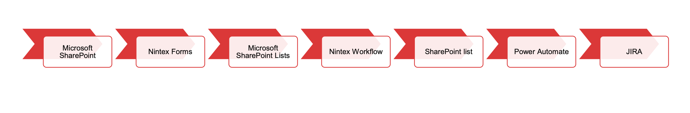
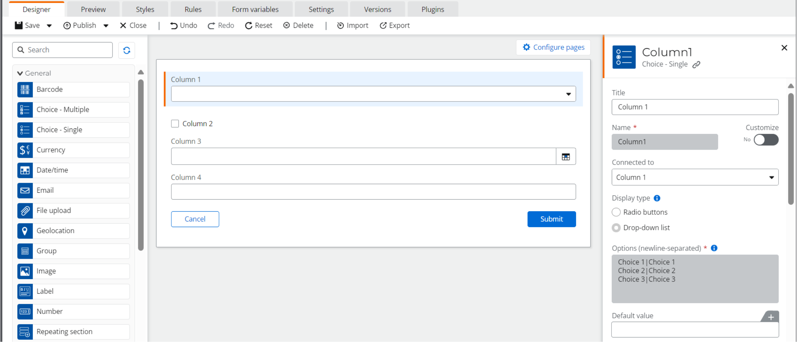
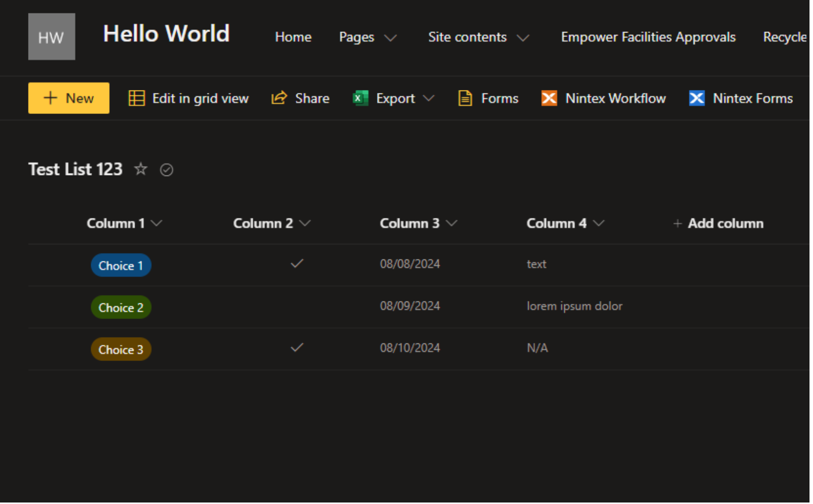
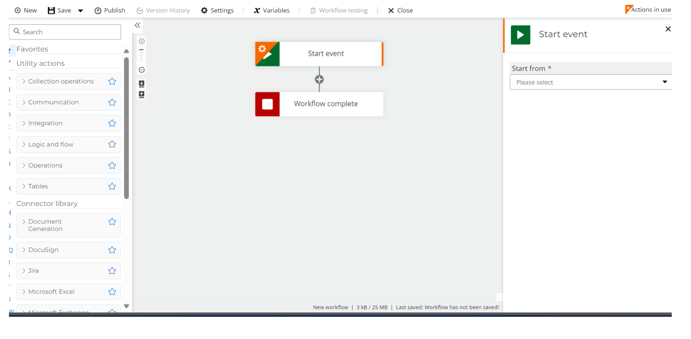
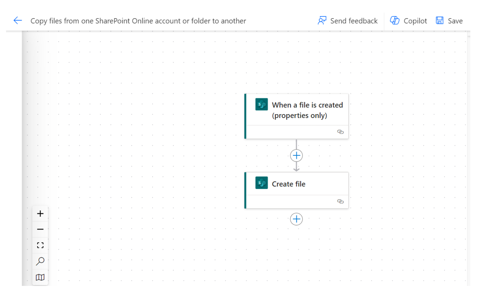
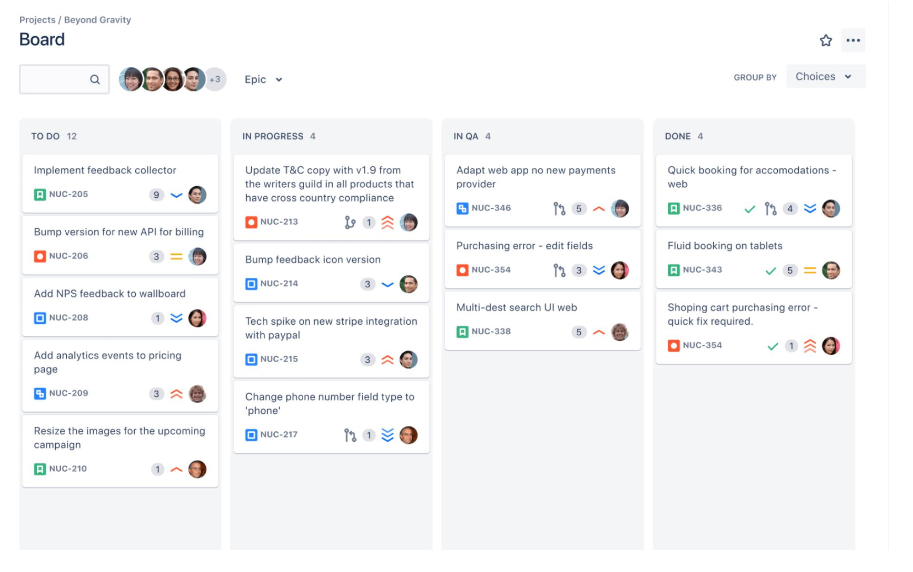

Integrating Jira with Microsoft SharePoint Lists using Power Automate and Nintex Workflows
Thurs Jul 31
Microsoft SharePoint
Microsoft SharePoint lets you create lists on your site. These lists have columns that
can connect with different tools, like Nintex. Nintex Automation comes with a form
designer (Nintex Forms) and a workflow builder (Nintex Workflows).
Nintex Automation lets you create different forms and use *rules to configure these
forms. SharePoint lists seamlessly syncs the columns with the form.
Each time a Nintex form is submitted, the SharePoint list is updated.
*rules: configurations made to form actions to change how
they act. Example: setting a submission to work only if it
meets a certain criteria.
Nintex Workflows
Nintex comes out with a new update. This update improved the look, feel, and overall
design. The form used for submitting SharePoint tickets was outdated.
We needed to upgrade the old form to a new design, and same with the workflow.
Once the form is submitted, it triggers the Nintex Workflow
The workflow then goes through the process of alerting owners of a submission, giving
them the option to accept or reject the ticket, and then updates the list.
Process

Microsoft SharePoint Lists also lets you connect with Power Automate.
Power Automate also has a workflow builder. The Power Automate workflow used sets
off a trigger that creates a story in the Jira board with details filled out from the SharePoint tickets form.
The Nintex Workflow makes it so you can accept or reject a ticket, and then updates
the list. The Nintex Form is essentially a GUI that is the connection between you and the list.
Jira: software tool used for project management and issue tracking. In this instance it is used to track
ongoing projects within our team
GUI: a graphical user interface used to interact with electronic devices through icons and visual
indicators. The form gives the user a good visual when submitting a ticket.
Jira
Once a submitted ticket reaches approval, there is a third option added to the
workflow that lets the owner select it as a Jira ticket.
This configuration triggers a Power Automate workflow that takes the details of the
ticket and formats them into a Jira story.
From here, it enters the backlog where it can be added to the next sprint cycle.
The list is then updated for the last time.
Pictures
Nintex Form Designer

Microsoft SharePoint Lists

Nintex Workflow Builder

Power Automate

Jira

note: these images are not from the actual project, but are used to illustrate the tools and processes.